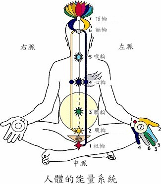
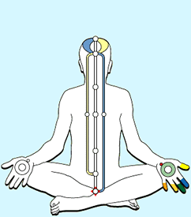
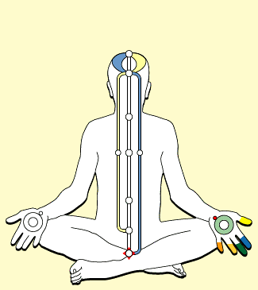

【瑜伽】人体精微能量系统
1. 三脉七轮原理概略及霎哈嘉瑜伽的原理 (简释)
我们每个人体内都有一个内在的能量系统， 称为灵体 (Subtle Body) ，原来它与医学上人体神经系统密切相联，它的主要部份为:
三条经脉、七个能量中心( Chakras七轮 )及灵量 (从梵文Kundalini昆达里尼)
(甲) 三条经脉(nadi/channels)
(I) 左脉 ( Left channel 或 Ida Nadi) 即阴脉或月亮脉
(II) 中脉 (Central channel，即 Sushumna Nadi)
(III) 右脉 ( Right channel 或 Pingala Nadi) 即阳脉或太阳脉
左脉 ( 又称阴脉或月亮脉 ) ，相对於过去、昏沉、感性和超我(社会制约)，亦掌管愿望的力量。
右脉 ( 又称阳脉或太阳脉 ) ，相对於将来、理性逻辑、宰制和自我，也掌管了行动的力量。
中脉位于脊柱处中部，相对於现在此刻、进化、和灵性升进，此乃人类与宇宙灵力合一的唯一通道，喜乐之源。
左右二脉分别与左右交感神经有关，却在视觉神经床的位置交叉到左右脑。中脉与副交感神经有关。现在医学尤其对副交感神经（中脉）的认识甚少，却十分肯定其重要性。若左右二脉过分活跃或有阻塞，人的注意力便被牵引离开中道(中脉)，引致不平衡，身心疾病因而产生，灵性升进更受阻。

(乙)七个能量中心 (Chakras)：
由下而上，它们分别是：
1 根轮 (纯真轮 Moodadhara Chakra)
2 腹轮 (真知轮 Swadisthan Chakra)
3 脐轮 (正道轮 Nabhi 或 Manipura Chakra)
3a 幻海 (Void 或 Ocean of Illusion)
4 心轮 (仁爱轮 Heart 或 Anahata Chakra)
5 喉轮 (大同轮 Vishuddhi Chakra)
6 额轮 (宽恕轮 Agnya 或 Ajna Chakra)
7 顶轮 (自觉轮 Sahasrara Chakra)
Chakras,
它们又称为『轮穴』，是由生命能量的转动所形成。梵文『Chakra』意为轮』。它们位于人体脊柱上各神经丛，各有特性，分别掌管人体的各种身心状态活动，又即人体的器官及情绪。
(丙)灵量 / 昆达里尼 (Kundalini)：
灵量 (Kundalini 昆达里尼 )：梵文本义为『卷曲』，她是人体灵性的重要部份，是每个人与生俱来隐伏在中脉底部盆骨里一块三角形叫荐骨 ( 骶骨 )
腔内卷曲成3圈半的能量。只有在『适当条件』下此沉睡的潜在能量才会被唤醒
和提升，并通过其上的五个轮穴，到达大脑顶部的神经丛，最后穿越顶轮和头盖骨，此时我们便接通了宇宙的能量，宇宙的能量可以在体内流通，令人达至『自觉』的境界，建立『瑜伽』状态（即中国人所说『与天地同流』、『天人合一』的境界）的同时，进入真正的静（百度~）坐，即无思虑但有知觉的入静状态
(Thoughtless
awareness)，在这种境界中静（无视~）坐，我们只能觉知『当下此刻』，一切过去与将来的思想和忧虑都不复存在，大脑平静下来，领略无可名状的喜悦，从而获得内在的平安、身心康泰。到那阶段练习者的手掌会发展出一种新的知觉，能显示相应能量系统的状况；只须简单的方法，即能作出相应的改善。

2. 较详细解说
人体的能量系统(Subtle System):三个部分
人类虽有肤色种族的不同，但这些都只是表面的分别。在这个看得见，物质性的身体外，我们还有一个看不见的、灵性的身体（subtle
body）。这个灵性的身体是由灵量(梵文Kundalini昆达里尼) 、三条经脉和七个轮穴 (Chakras) 组成。
灵量(Kundalini)
灵量是从梵文 "Kundalini"
这个字翻译过来的，这个字的本义是卷曲，在印度的古籍，这个字被用来指在人体脊柱底部，卷曲成三圈半的能量。随著佛经传入，有关灵量的知识也传入中国，当时按音译为「军荼利」、后亦有译作「昆达里尼」、「灵蛇」、「拙火」、「灵能」等。我们译作灵量，是取它是个灵性的能量的意思。
灵量位於我们脊柱底部三角形的荐骨的位置。这块荐骨( 骶骨) 医学上称 Sacrum bone，古希腊文原意为圣骨(Sacred
bone)。当人还是胚胎的时候，灵量便从头顶进入，通过脊柱，潜藏在三角骨的位置，卷曲成三圈半的形状。灵量是个母性的力量，我们体内的灵量是外界万物之母的力量的反映。这个母性力量一直养育著我们，照顾著我们。她知道我们的一切，到了适当的时机，在适当的条件下，灵量便会升起，将我们连接到无所不在的整体能量去。这时我们便说那人得到了「自觉」（Self
realisation），他得到了觉醒，他悟了道，他知道了真我，他知道了自己的本来面目。
关於灵量的知识在许多古代文化中都存在，例如在中国，老子所说的那个万物之母，「先天地生」、「为天下母」的力量，便是灵量，他称之为「道」。锡吕‧玛塔吉女士说，老子是个诗人，所以他用文学的手法来说明这个「道」。老子说：「譬之若江海」，是用扬子江来比喻灵量的升进。灵量升起时，要通过上面的几个能量中心，才能通过顶轮而出。如果这些能量中心有阻塞，灵量便很难通过。这种情况，就好像是在扬子江开始航行时很困难，有许多旋涡和大石，但通过重重险阻，接近海洋的时候，便变得风平浪静了，最后还会进入大海，与整个海洋合一。
有些人是生下来就已经是得到自觉的，因为他们与上天的能量接上，因此往往能成贤成圣，成为文学家，音乐家，为人类作出很大的贡献。在过去，这些得到自觉的人只是人类中的极少数，通过霎哈嘉瑜伽，越来越多的人会得到自觉，这是历史上从未发生过的事情，亦将会带来深远的影响。

三条经脉(Nadis)
我们灵性身体另一个构成部分是三条经脉，分别是左脉，中脉和右脉。三脉是我们人体内的三种力量，左脉掌管我们的记忆、过去和情感方面，右脉掌管我们的思维、末来、行动以及计划力面。一般人由於中脉没有打开，只能使用左右两脉的能量，而且他们多数不能两边平均使用。有些人使用左边的能量多些，有些人使用右边的能量多些，於是造成两种很不同的人格。
左脉(Ida Nadi)
倾向左边的人很内向，他们感情丰富，却怯於表达出来，往往多愁善感，顾影自怜。他们的好处是较有艺术气质，比较容易相处，不曾去主宰别人，无事生非。缺点是性格怠惰，做事优犹寡断，缺乏系统，很容易受别人的支配，在现今竞争剧烈的社会，他们的成就往往有限。倾向左脉的人不会折磨他人，却乐於接受别人的折磨，他们往往自甘受苦，并走向自我毁灭的道路。
右脉(Pingala Nadi)
倾向右边的性格外向好动，好作思考计划，勇於表现自己、却缺乏情感及艺术方面的发展。他们的好处是办事能干，井井有条，懂得组织他人为自己做事，由於他们能量较多，做起事来像有用不完的精力似的，所以能够有魄力做大事，在现代的社会，这类人往往成为政客、官员、行政人员等，有一定的成就和地位。但他们的缺点是自我过大，以为一切都在他们掌握之中，他们只看见自己，却看不见他人，於是不惜牺牲他人为自己服务。在小的层面是去利用他人，剥削他人，在大的层面是去侵略和掠夺其他国家。倾向右脉的人肝脏往往过热，於是脾气暴躁，对他人呼呼喝喝，令别人感到痛苦。
中脉(Sushumna Nadi)
打开了中脉的人兼有二者的长处，却没有二者的短处。他们看见人最崇高的灵性方面，於是能欣赏别人、享受和别人在一起，真正做到相亲相爱。古往今来，真正的大文学家、大音乐家都是打开了中脉，得到了自觉的灵。他们的灵感来自天上。就算有些在世时得不到承认，但却只有他们的作品能通过时间的考验，成为不朽的作品。许多人在欣赏之余不明所以，只觉得他们的作品有一种独特的吸引力，其实是因为他们的作品有清凉的能量散发出来，并使人自然而然地进入无思无虑的状态。打开了中脉的人许多亦成为历史上的大人物，他们在历史转折的关头出现，带领自己的国家和民族闯出一条新的出路。但他们却不曾陷入自我的陷阱，他们许多都能保持谦虚，并不将自己置於他人之上。有些得到自觉的人社会地位并不高，没有多大成就，但他们都能表现得与众不同，并向周遭散发出平安，令身边的人感到喜乐。
中脉没有打开的人是没有办法进入真正的静（百度原因~）坐的。如果他们用勉的方法去静（请无视~）坐，很容易会落入左边的潜意识(sub-consciousness)和右边的超意识(supra-consciousness)之中。
中脉是我们的副交感神经系统(para-sympathetic nervous
system)，是自主的神经系统，是无法通过人为的方法来控制它的。左右两脉却不同，左右两脉是我们交感神经系统(sympathetic nervous
system)，是可以通过人为的方法来刺激或控制它的。例如我们跑步，便可加快心跳与呼吸。於是有些瑜伽术士，教人利用意识刺激左右两脉，以图使人体产生一些异常的反应。同时他们会使用一些怪异的方法，使人走向极端的左边或右边。如果一个人走得太左或太右，便超越了人的范围，在左边，他会连接上集体潜意识(collective
sub-consciousness)；在右边，他会连接上集体超意识(collective supra-consciousness)。
左边的潜意识是代表过去的力量，一切过去的，已死的和在进化过程中被淘汰的事物都在这里。於是那个人会产生一些异常的行为。他在静（啦啦啦）坐时会不由自主的做出一些动作，他自己也不能控制，或在生活中做出他自己也不愿意做的事情。右边的超意识是代表将来的力量，一切好宰制他人的力量都在这里。一个人连接上这里表面看来好像是具有一些灵幻的能力，但对这个人并没有根本的好处。许多人害怕学习某种功法会出现偏差，但却说不出是甚麼原理，其实就是害怕出现上述两种情况。
由於霎哈嘉瑜伽的练习方法是先打开一个人的顶轮，让灵量沿中脉上升，所以不会发生出偏的情。中脉连接到的是集体的无意识(collective
unconsiousness)，即宇宙无形无象的整体能量。中脉所代表的是现在，即当下此刻。锡吕‧玛塔吉女士经常说，过去的已经过去，将来是不存在的。唯有在现在此刻，我们才能够知道真实。
七个轮穴(Chakas)
我们身体能量系统的第三个组成部分是七个轮穴。这些轮是身体上能量的进出口，这些进出口在身体上主要有七个，因此一般说有七个轮穴。但其实除了这七个大的外，还有许多小的，分布全身。经脉也是一样，除了三条主要的外，还有许多小的。人的身体远比今天医学所了解的复杂。七个轮穴由下而上分别是：根轮、腹轮、脐轮、心轮、喉轮、额轮和顶轮。
现代医学发现，这几个轮的位置其实相应於人体脊柱上的主要神经丛(Plexus)，是控制我们身体的枢钮。古代的瑜伽士更确切的描述每个轮的花瓣数，这些数目和该神经丛处的副神经丛(sub-plexus)也相应。此外，每一个轮都有它独特的特性和功能，我们以下逐一介绍。
根轮（纯真轮 Mooladhara Chakra)
根轮又译作纯真轮，梵文是Mooladahra，意思是根部和支持。这个轮穴的颜色是珊瑚红，有四块花瓣，它的特质是纯真和智慧。这个轮穴是整个能量系统的根本，它的位置在脊椎骨底部，身体之外少许。
在身体方面，这个轮穴相应於盘骨神经丛(Pelvic
Plexus)，照顾著我们的排泄系统和生殖器官。因此如果这个轮穴变得疲弱，我们便会患上这些器宫的疾病。特别是在现代社会，性变成一种商品来贩买，许多人在性方面都变得随便，於是纯真轮很容易受到伤害。爱滋病便是这样形成的，如果停止不良的性习惯，清洁纯真轮，那麼爱滋病也能够治好。
纯真和智慧是一个人辨别是非对错最根本的能力。譬如说，现代有许多自称为灵性导师的人，到处兜售，我们怎样判别谁是真的导师，谁是假的导师呢？许多人认为要先做许多调查研究，但那些导师所谈的都在人类知识范围之外，又如何去求证呢？其实我们体内早有这种力量，直接的知道甚麼是好，甚麼是坏。例如有一派人认为可以通过性的力量提升灵量，亦有不少人跟从他们。但一个纯真的人看见那些变态的行为，首先会感到害怕，又怎会愿意去学呢？在现代，读得书多往往和智慧没有甚麼关系，凭著一番理论，那些很有学问的人往往做出普通人都不会做的蠢事。相反，那些读书比较少的农村居民，却有一种根本的智慧，过著一种简单和平衡的生活。纯真轮打开的人纯真像一个小孩子，但他们仍然保持著小孩子那种纯真和好奇心，他们生活於这个社会，却不会完全受制於这个社会的制约。
根轮对应的部位是手掌和脚掌的掌跟处，如果根轮有阻塞、这个部位会有麻痹、刺痛，发热或沉重的感觉。每个轮穴都分左中右三部，如果左手有感觉，便是这个轮穴的左部有问题。如果右手有感觉，便是这个轮穴的右部有问题。如果左右两手有感觉，便是整个轮穴有问题。
根轮是灵量的守护者，如果一个人的根轮太坏，灵量便不会升起。如果那些瑜伽术士企图用性的方法发动灵量，纯真轮便会发出可怕的热力。
腹轮（真知轮 Swadisthana Chakra）
腹轮又译作真知轮（Swadisthana），在人体能量系统的示意图上，往往将它划於根轮之上，脐轮之下，但其实真知轮是没有一定位置的，它在腹部像个卫星一样绕著脐轮旋转。真知轮的颜色是黄色，有六块花瓣。这个轮穴的特质是纯洁的知识(Nirmala
Vidya）和注意力（Nimala Chitta）。打开了这个轮穴的人，会得到纯洁的知识和从上天而来的创造力。
所谓纯洁的知识是对应於真实的知识，或者说是世界的实相。我们在学校里所学的，都可说是相对的知识，这些知识只有一时一地的意义。譬如说英文只有在说英语的国家及社群有用，电脑指令只在某电脑软件中有用，某种推理在某逻辑系统中有用。这些知识都可以说是些实用性的知识，是为了应付生活才学的。但除了这些实用性的知识以外，在古代的经典中都说有一种超越的知识，知道了这种知识，便会知道宇宙人生的整体道理。这种知识在过去被称之为「道」、被称之为「理」、或被称为「真理」。在古代，读书的目的是明道理，或追求真理。现代人对真理的观念改变了，对读书的目的也改变了，对於真理的追求也显得无从入手。
其实以人类的意识，我们只能知觉有限的世界，无法知道隐藏在背后的实相。以有限的大脑来思维，只能投射出形形色色的理论和看法，却没有甚麼基准来判断孰是孰非。每个人都有他的头脑，投射出不同的看法，因此造成不断的争论和纷争。除非他们的意识能进化至更高的层次，否则这些争论是不会休止的。
练习霎哈嘉瑜伽以后，一个人的中脉会渐渐打开，外界的整体能量会进入他的身体，清洁他的各个轮穴，同时他大脑顶部的神经线会受到启发，使他得到一种新的意识，我们称之为集体意识（Collective
Consiousness）。他能知觉到他从前末能知觉的事物，譬如说他从前能知道一件物件的形状、颜色，但却不知道那件物件是否有良好的能量。得到自觉以后，他便能通过他的双手测验某一物件的好坏。人的指尖是大脑神经的末梢，特别敏感，因此在开始时会先在指尖上感应得到，经过一段时间以后，便能在其他部位直接感应得到。这种知觉能应用於物件、地方、人物，以致於一些抽象无形的事物。这样，这个人便能分辨出谁是真的?
ffb t人，谁是假的。
他从前像一个盲人，在黑暗与无知当中，现在他有了光，他知道了甚麼是对他好的，甚麼对他不好。得到绝对的知识以后，他变成是自己的导师，他不用别人告诉他要怎样做，他自己在内里知道，他自动成为一个有道德的人，自动远离那些令他步向毁灭的坏习惯，而且再不会被那些假导师欺骗。这个人可能学历不高，甚至目不识丁，但他所得的其实比他人为多，因为他得的知识是属於更高的意识层次。他所得的知识是绝对的，放之四海而皆准。古人说：「为学日益，为道曰损」，意思是说一般读书的人，但追求真理的人，脑袋中的累积越来越少。又说：「有真人然后有真知」，说的便是这个意思。
真知轮相应的部位是大姆指，如果一个人学习邪术或相信错误的学说，真知轮左部便会阻塞，并且表现在左手的大拇指上。
真知轮在身体方面对应於主动脉神经丛(Aortic
Plexus)，它掌管我们的脾脏、胰脏和肝脏下部。真知轮是右脉的点，如果一个人过度活跃，过份思考和计划，便会使这个轮穴和整个右脉发热，长期的透支，便会使这个轮穴衰竭，无法照顾脾脏、胰脏和肝脏的需要，产生这些器官的疾病。如果一个人的脾脏不好，便会生血癌，如果一个人的胰脏不好，便会生糖尿病；如果一个人的肝脏不好，他的注意力便不好，经常烦躁、胡思乱想，不能入静。如果有这方面的问题，会表现在右手的大拇指上，这时我们便应停止过度的思考，并用各种方法使肝脏凉化下来。
脐轮(正道轮 Nabhi Chakra / Manipura)
脐轮又译作正道轮，梵文叫 Nabhi
Chakra，位於腹部中央肚脐的地方。这个轮穴的颜色是绿色，有十块花瓣。在人体能量系统示意图中，这个轮穴被划成是第三个轮穴，其实在灵量升起时，是先通过这个轮穴，才到第二个轮穴真知轮的。在我们身体中的每个轮穴，其实都是我们进化过程的里程碑。
这个轮穴的特性是追求，它也掌管著我们的福德财用和满足感。自从进化伊始，深植在生命之内的是一种追求的需要。为了得以延续，生命首先要追求的是食物和水，越是高等的动物，他们所需要的也越多，越复杂。
像现代的人，很少以得到温饱为满足，他们得一便想二，有了稳定的生活，还要去追求大量的财富。有了财富，便追求名誉、地位和权力。过去许多大圣大贤均指出，这种对世俗财富和权力的追求是没有出路的。这些带著功利目的、不纯洁的欲望是不能得到真正满足的，就像一个无底的深谷，一个人拥有多少钱，多少权力，还是觉得不足够。现代的经济学认为人就是这样的，於是说人的欲望不能完全被满足。
如果一个人是敏感的话，他应该可以从自己的经验知道。当他没有钱没有权力时，他以为有了钱有了权力，便可令自己快乐，但那些有了钱有了权力的人却一样生活得不快乐，他们的问题可能比没有钱没有权力的人还多。当一个人明白了这一点，他便知道所有这些物质性的东西都不能真正令他感到满足，他要追求一些有永恒价值的事物。这时他便在进化的过程中迈进了一步，他成为一个真理的追求者，或者说，他是一个求道者。这种求道者在世界上任何地方都有，而在现今这个时代尤其多。
古往今来，求道的过程是异常艰辛的，那些求道者四处找寻真正的导师，如果没有明师在世，便要自己参悟。即使有明师在世，也设下重重考验，不轻易传授，而且传统是一个导师只收一个门徒，因此过去得到自觉的人简直有如凤毛麟角。虽然经典仍在，求道的人也很多，但都无门可入。与此同时，有许多假导师，将灵幻的事物当做一种商品来贩卖，许多真诚的求道者都错误地跟从了他们。不过在经典上亦曾经答应过，凡寻找的，必将寻见。如果一个人一意追求，道心不懈，那也会发生许多机缘巧合的事情，引导他走上正确的道路。
脐轮分左中右三部，左部是我们的家庭生活、福德财用方面。如果一个人的脐轮受到启发，生活方面便会受到照顾，不愁衣食，在物质生活上也感到满足。这是因为那个人得到了瑜伽，是一种不求而得的结果。而不是像许多人那样，为了祈福而求神拜佛。脐轮右部掌管一个人在事业上的成就，有这个力量的人，在古代则可以成为圣君贤相，在现代则成为政治上的领导者。脐轮左中右的三个力量与中国传统所说的福禄寿相当。
脐轮的另一特性是平衡，所谓平衡，就是过著一种中正平和的生活。过去的大圣大贤都教导世人要过一种中庸的生活，避免走向极端。
脐轮在身体上相应於太阳〔腹腔〕神经丛(Solar
Plexus)，掌管著我们的胃部和肠脏。如果一个人家庭出现问题，或过份担忧钱财，便会出现胃病，表现在左手的中指上。如果是事业的问题，则表现在右手的中指。若两手都有刺痛，便是整脐轮出了问题。
有些人认为练习瑜伽的人要素食，这是没有科学根据的。我们应根据体质来选择适合自己的食物，不应盲目的受制於条文。倾向左脉的人应多吃点肉类等高蛋白质的食物，倾向右脉的人应多吃点蔬菜等碳水化合物的食物。
幻海（空 Void）
在人体能量示意图中，在脐轮的外面有一个绿色大圈，它是由真知轮围绕著正道轮转动而形成的，梵文叫做 Bhavsagar，英文叫做 Void 或 Ocean of
illusion，意思是迷惑的海洋。在古代的经典中，常有用海洋比喻求道要超越的难关。在佛教中有到彼岸的说法。在但丁神曲，有古代诗人维吉尔带领但丁渡过迷惑的海洋的故事。禅宗有迷时师渡，悟时自渡的说法。在人体，这个迷惑的海洋表现在由灵量到中脉的一个中断的区域。我们知道左脉起於根轮，右脉起於真知轮，但中脉在幻海之上，灵量无从到达。这种情况就好像有三张梯，左右两张放在地上，而中间那张却悬在半空。
古代的求道者要越过这个幻海，先要清洁自己的轮穴，由下而上，一个一个的去清洁。由於轮穴的清洁与否，与一个人的思想和行为有密切的关系，因此要得到升进的人，先要有道德，过著一种平衡的生活。到他遇到真正的师傅，就能渡过彼岸去。
心轮(仁爱轮 Heart/ Anahata Chakra)
心轮在我们胸部正中，胸骨的后面，它的颜色是紫，有十二块花瓣。心轮相应於心脏神经丛(Cardiac Plexus)照顾著我们的心脏及呼吸系统。
当我们还是小孩的时候，抗体会在胸骨内形成，起著对抗疾病及外来入侵的作用。如果在童年时得不到母亲的照顾，这部分的能力便不能健全发展，长大后会变得很胆小，害怕黑暗，害怕犯错，唯恐别人伤害他。
此中心的右侧，反映父亲方面，父亲失职或过份专制，此中心之右侧会逐渐受到阻塞。
心轮的特性是爱心。心轮打开了的人，会自然生出一种仁人爱物之心，这是一种无条件的爱，是出於同情共感的精神，不是因为某种功利的目的才这样做。心轮打开了的人，能超越一己形躯之私，去关心和帮助周围的人。例如孟子说，如果我们看见一个小孩子跌入井中，我们便不期然要救他，孟子说这是不忍人之心，怵忑恻忍之心。后来儒家解释孔子所说的「仁」，也是采用这种一体之仁的意思。天地是生生不息的力量，如果我们明白到宇宙万事万物都是一体之所化，那麼我们看见其他人受苦，就好像是自己受苦一样。因此后世儒家又有民胞物与的说法，看见其他人，就像看见同胞骨肉一样，看见世间的万事万物，一草一木，就好像看见自己在世间的伙伴一样。
人的灵也是这样，在我们心轮左部的那一团火是宇宙的整体在我们每一个人心中的反映，在物质上人有形躯之隔，在灵的层面，大家都是同一个整体的一个部分。因此这种爱是无条件的、无执著的。
无执著的爱和有执著的爱很不同。后者像男女间的爱，是一种执著和迷恋。前者是无条件的，不会付著於任何人或事物。锡吕‧玛塔吉女士常举一棵树的汁液为例，如果一棵树的汁液只眷顾著一朵花，停留不动，那麼整棵树便会死掉。因此无执著的爱是周流不息的，才能润泽万物。
喉轮(大同轮 Vishuddi Chakra)
喉轮位於颈项底部喉咙处，颜色是蓝，有十六块花瓣。它照顾著我们的颈部神经丛(Cervical Plexus)和甲状腺。
此中心是神经的枢纽，手掌上的神经线都先经过这里，才连接到大脑去。因此这个中心和我们手掌的感应能力有很大关系。若果这个轮有阻塞，即使那个人得到了自觉，他自己在手掌上也不能感到凉风。相反，若此能量中心畅通清洁，他的手掌便能感应到那无所不在、周流不息的整体能量。
这时我们便能真正明白古人所说万物一体的意思。同时体会到有一个无所不在的生命能量，造就一切关乎生命的工作。这我们便不会再夸大自己的作为，从而谦卑下来，静观大化，好像是看著一场戏剧在身边上演一样。而我们是一位观众，无论发生甚麼事情，我们都好像置身事外那样，不会有太大的反作用，所谓宠辱不矜，能经常保持平常心的状态。
这不是说甚麼事也不做了，而是一方面忙碌造事，另方面却不认为自己做过甚麼事，一切都交由自然的力量去成就。在薄伽梵歌，这叫做「无欲之行」，老子称「无为而无不为」。
吸烟会令喉轮阻塞。此外对喉轮危害最大的是内疚感，它导至此中心左部阻塞。内疚感强的人不以正确的态度去面对错误，却以内疚感来掩饰它，认为自己有罪。同时，这个人的自尊心会降低。如果能治疗喉轮左部，那个人的性格也会改变过来。
此中心之右部主宰言词，我们一定要注意如何使用声带，不可轻浮粗暴，冷嘲热讽，或责骂他人。喉轮好的人有良好的沟通能力，他说话甜美，懂得如何替人排难解纷。由於他明白到自己是整体的一个部分，他很能合群，很受集体的欢迎。这类人引导我们走向团结，走向美满的人际关系，在大的层面走向世界大同。
额轮(宽恕轮 Agyna Chakra)
此中心有时亦称为第三眼，位於脑的中心，颜色是白，有二块花瓣。照顾著我们的松果腺(pineal gland)和脑下垂体(pituitary gland)。
这个中心是很狭窄的通道。左右两在视神经交叉处相交，当这中心畅顺健全时，灵量直透而升上，思绪静止，思绪交替的空间延长。这时注意力能依附在这刹那停顿与平静中，从而达至完全醒觉却又无思无虑的状态。使人领略到那种莫大的安宁与舒适，若果能把这种无思无虑的状态维持并延续，我们对宇宙的新探索也就开始了。
此中心是通向宇宙资料库或宇宙无意识的闸口，如果它不畅通，灵量便不能升入顶轮，你的灵便没法达成与宇宙的整体能量相结合。
造成此中心阻塞的是太大的自我 (ego / 我执)与超我(super ego / conditioning
所知障)，这是因为右过多的体能活动和思考过度，以及左脉的过度情绪化和思想积集，使两脉膨胀如气球，向中脉挤压，在这种肿胀状态下，中脉受堵，阻挡了灵量在头顶升起。
要改善这中心，我们应该培养出宽恕别人及自己的态度。如果我们不宽恕别人，便不能通过这狭窄的通道。这就是基督耶稣一再强调「宽恕」的原因。
要克服自我，佛陀也教导世人说「诸法无我」，就是要破除「我执」，这自我是没有永恒意义的。另外，他又教我们用欢笑的心情来降伏自我，就是当这个自我自大来，以为自己做了甚麼了不的事情的时候，自己看出这种想法是多麼的可笑。
超我来自人或社会的思想的积集。在人来说是他的习惯或固定化了的思想，在社会来说是那个社会一代一代传下来的社会制约。要是一个人受制於超我，便不能改变自己的习惯。要是一个社会受制於超我，便不能挣脱它的文化传统。
要克服超我，不是要走向它的反面，发展那个自我，而是要克服思想上的积习，返回中央。
这个轮是连接著视神经床的，因此怎样使用眼睛很重要，如果我们常用眼睛看那些不纯洁的事物，目迷五色，左顾右盼，我们的额轮便不能良好。额轮的元素是光，因此多看蓝天白云，多看自然界的花草树木，或多看纯真无邪的小孩子，都会对我们的额轮有帮助。
顶轮(自觉轮 Sahasrara)
此能量中心围绕头顶，这里是所有能量中心与三条脉络会合的地方，当灵量上升，直透头顶天灵盖上方时，你便得到你的自觉了。
顶轮掌管著大脑顶部边缘系统(limbic
area)的一千条神经线，因此古人用一千瓣的莲花来代表它。这一千神经线一般人是用不到的，得到自觉以后，这些神经线便会受到启发，并且活跃起来。这时那个人便能获得他从前没有的力量，在中枢神经系统感知到他从前不能感知到的事情。
初学者最初得到自觉时，头顶通常只有很小的一丝灵量在升扬，而各能量中心亦只是稍稍通畅。若能持之以恒经常练习，各能量中心会逐渐得到清理，洁净的能量中心会进一部开启，便会有较多的灵量升扬，你对生命能量的感应力也会增强。
这种感应力有时会表现为感到手部及指尖有刺疼或发麻，或有时在能量传送时会感到体内各能量中心有一股清凉之和风自头顶涌出，这股微风有时显得温热，那是因为你的灵量正在清理各个能量中心。宇宙灵力便会恒久不息地清理你的灵体，你会更清晰地感觉到一切环绕在你周围的生命能量。
你会变得更为开朗，更懂得接受那来自大自然：树木、山峦、繁花、浮云与蓝天所放射出来的良性能量，你也能感觉和领会到别人的情况，而且知道何时和如何去帮助他们。这样你便开始过著一种灵性的生活。
锡吕‧玛塔吉女士经常说，有两个真理。第一，我们不是这个身体，不是这个记忆，不是这个思维，不是这个自我和超我，我们都是纯洁的灵。第二个真理是有一个无所不在的上天的浩爱力量存在，这个力量造就所有关乎生命的工作。印度的经典称这个力量为
Paramchaitanya，意即无所不在的生命能量，帕坦迦利称之为改变季节的力量，孔子、老子称之为「道」，在不同的文化，不同的传统，对这个力量都有不同的称呼，但所指的其实是同一个力量。
练习霎哈嘉瑜伽不久，你便会感到这个力量存在，并且流通於你。随著静（继续无视~）坐的加深，你的注意力会变得越来越好，注意力能时刻放在能量的层面，而不是事情的表面。到了这一阶段，你便超越了思维概念。
慢慢地你能如其所如地观照一切。完全溶入整体之中，这境界是无言无说的，因为一切都是一，没有了他者，没有了对立。过去达到了这个境界的人都陶醉在其中，亦不能用语言文字去描述它，所以关於顶轮，没有文字上的记载。
练习霎哈嘉瑜伽，第一个要达到的阶段是无思虑的入静状态，你没有思想，但对周围发生的事物是知觉的。第二个要达到的阶段是无疑惑的入静状态，你清楚地感觉到那生命能量的存在，而且确切知道这个能量运作的方式。这时你的知识都是你从内在知道，不是从别人那里听回来的，因此你对霎哈嘉的知识再没有怀疑。